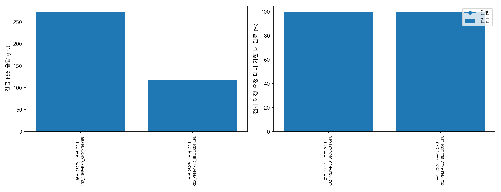
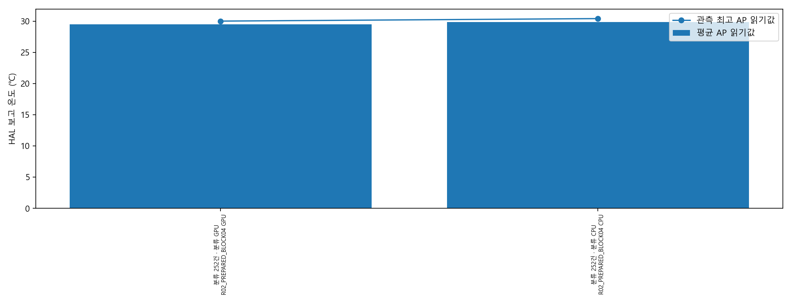
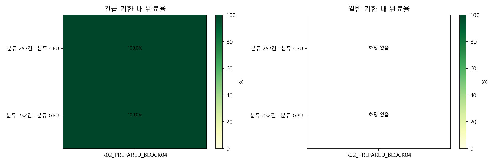
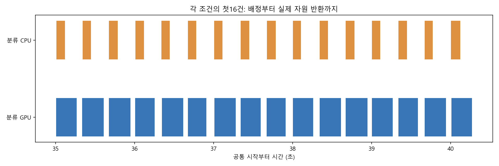
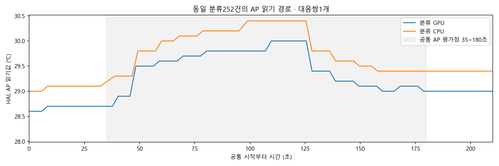

두 군252/252 기한 내·출력PASS. CPU P95 116.581ms / GPU273.369ms. AP 평균은 GPU29.4666℃ / CPU29.8679℃지만 시작도GPU28.6℃ / CPU29.0℃로 달랐습니다. 이 한 쌍의 AP 차이를 열 절감으로 판정하지 않습니다. 에너지J 계산불가·표면온도미검증·독립대응1쌍입니다.
해석과 한계 · 시작 상태/종료서비스·HAL 읽기값을 비교합니다. 표면 온도·센서 정확도·검증된 에너지 절감을 뜻하지 않습니다. 실패·미실행은 attempts.csv에 보존했습니다.
sessions.csvattempts.csvrequests.csvpaired.csvpaired_intervals.csvreported_AP.csvbattery_API_unvalidated.csv



